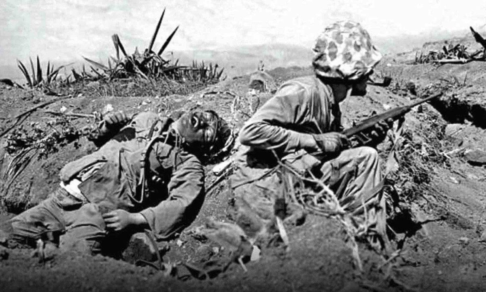

QUE BOM VOLTAR PARA CASA.
A.B.G.
(Condensado do «Harper’s Magazine»)
Publicado no Brasil em SELEÇÕES DO READER'S DIGEST, edição de abril de 1945.
(Mantém grafia original da época)
PARA MIM, de começo, aqueles homens eram pura e simplesmente a turma que vinha fazer consertos no telhado da casa. Ouví uma escada de mão raspando na parede do lado. Depois, - alguem disse, no cantado e pachorrento sotaque do Texas: — Okay, eu vou subindo mesmo atrás de você. Se sentir tonteira ou coisa parecida, me chama!
Também, a gente vai embora cedo hoje; o verão está um bocado quente este ano, e o sol "tá de rachar! Vamos trabalhar. E olhe que aqui não tem «Zeros»...
Daí a pouco começavam a martelar, e os meus filhos correram para fora de casa, “queriam ver. Um dos homens era alto e magro; havia outro mais baixo, e um mexicano.
Quando, à tarde, voltei a casa, o mais “alto estava tratando de convencer o meu caçula a dar uma volta com ele na sua motocicleta. Os outros dois homens haviam-se sentado na grama, junto a um maciço de flores. O mais baixo estava “com os joelhos à boca, e os braços bambos “cruzados sobre eles. Com um sorriso aberto e manso, de quem não entende a lingua da terra, mas se está esforçando, ele seguia com os olhos as tentativas que meu irmão, de licença em casa, fazia para treinar o perdigueiro na maneira de abocar a caça.
— O homem não ouviu os meus passos na área, senão quando cheguei de repente junto dele. Parece-me, porque então deu um pulo e girou no assento, voltando-se para mim.
— Me desculpe, disse eu, —não queria te assustar…
Olhou-me com a expressão de quem se desculpa; mas nos seus olhos azuid de irlandês a pupila mostrava-se dilatada, e nos músculos da mandíbula notei-lhe um tremor.
— Ainda estou um pouco nervoso, disse ele. — Lá donde eu venho, era japonês por todo canto...
Oferecí-lhe cigarro, que ele aceitou desajeitadamente. Tremiam-lhe os dedos ao acendê-lo. Seria difícil dizer que idade teria aquele homem. Rugas profundas cavavam-se-lhe em volta da boca e do nariz. O cabelo, que fora bem negro, mostrava agora, aquí e alí, feixes de prata. Tornou a dirigir o olhar para o perdigueiro, anelante, que lambia a mão de meu mano, e comentou:
— Cachorro tem uma vantagem: eles nunca abandonam a gente... Aquele camarada, alí, está vendo?, tinha um cachorrinho e ficou triste de saudade por deixar ele na ilha. Foi em Honolulá. Esse perdeu uma das vistas, e ficou aleijado duma perna, como eu. Um tiro me levou a rótula do joelho.
Com a mão em concha sobre a brasa do cigarro, como quem fuma às ocultas, tirou uma fumaça comprida; depois, com muito cuidado, encostou-se mais à vontade contra a árvore. O sorriso hesitante pairou sobre o gramado, as roseiras floridas e os eloendros.
— É bem bom a gente voltar pra sua terra…
— Você andou com ele por lá? Perguntei.
— Não. Eu estive em Guam. Já estava lá quando os japoneses chegaram em 1941. Esses diabos me deixaram preso lá “onze meses e quatro dias…
— Eu tenho idéia de ter lido nos jornais que não ficou nenhum americano vivo em Guam.
— Matamos japonês que não foi graça! tornou ele, com um sorriso largo.
— Todos nós, que estávamos lá, éramos uma turma curtida, com 5 a 15 anos de experiência. Éramos 368, entre fuzileiros, sapadores, e umas mulheres no hospital. Estávamos construindo uma pista. Isso foi antes do ataque a Pearl Harbor. Eu tinha sido convocado, como tenente da reserva. Eu já tinha sido dos fuzileiros antes, sabe? Vendí a casa e o moinho— ‘um negócio que me deixou de tanga!—e a patroa pegou nos dois guris e no bebê, “e levou eles pra Seattle. Arranjou e prego nos estaleiros. Coisa boa, tambem, porque quando eu fiquei prisioneiro,acabou-se a pensão. Ela não recebeu coisa nenhuma até que o governo começou a um seguro qualquer, uns nove meses depois. À razão é que os japoneses me tinham dado como morto.
A gente podia ter-se aguentado em tivesse tido com oquê. Estávamos bem entrincheirados. O comandante estava
sempre pedindo reforços e uma porção de coisas, mas a gente só tinha armas curtas, calibre.45, e umas mil
rajadas de anti-aérea.

No dia 12 de dezembro, eles caíram em cima de nós, na volta de Pearl Harbor. Bombardearam três dias e três noites.
Quando aquilo acabou, não havia na ilha uma pedra, um calhauzino desse tamanho que não tivesse sido virado. Para matar japonês era preciso deixar eles ir desembarcando, Quase todos morreram na faca.
A ilha não é pequena não, tem seus 32 por 64 km e os japoneses estavam chegando por todos os lados.
Nós podíamos ter repelido eles, talvez nem que fosse só com metralhadoras. E alguns morteiros. Posição, a gente tinha: mas munição, neris! Você sabe o que era aquilo? Um matadouro!
«Eles deram o ataque final no dia 21 de dezembro. Nós aí só tínhamos de sobra 100 homens, e as mulheres. Os japoneses dinamitaram o hospital; nenhuma das mulheres durou mais de dois dias, depois do que eles fizeram com elas. Na vila dos índios, não ficou nem vivalma! Pra mostrar o que eles faziam, basta ver: um dia nós estávamos acorrentados numa árvore, e apareceu por alí uma garotinha brincando, era assim do tamanho do caçulinha do senhor—ai pelos sete ou oito anos. Brincando com a bola. Dois japoneses vieram, um deles agarrou ela pelos cabelos, e o outro decepou a cabeça da menina. Depois espetaram ela num poste! Quando tornamos a passar por alí, daí a uns meses, a caveirinha ainda estava lá. Um craniozinho assim…
«Nos mandaram limpar tudo aquilo, aproveitando o que se pudesse aproveitar, e depois carregar nos navios. Encontramos algumas armas, e eles mandaram a gente montar uma espécie de curral, e quando acabou esse trabalho, já não havia mais o que fazer. Então nos meteram lá dentro, feito gado. Não havia abrigo de espécie alguma, nada, e uma solina que nunca mais acabava. A gente alí torrava no sol. Disenteria, tudo quanto era doença, e um calor de rachar pedra! Houve sujeitos que ficaram até malucos. Desordens toda hora, era preciso amarrar eles bem amarrados, pra não se matarem uns aos outros.
Nos traziam as rações de arroz uma ou duas vezes por semana. Era obrigação deles trazerem lenha para a gente cozinhar, mas nunca traziam que chegasse. E assim a gente comia tudo meio cru. Alguns oficiais calculavam que nós devíamos receber uns 400 gramas por semana.
«Não havia nada prá fazer, só ficar sentado no chão, esperando. Se morria algum, deixavam ele ficar alí mesmo... Dez, doze dias, tinha cadaver que até os ossos ficavam torrando no sol. Se alguem me dissesse que um cristão podia sofrer tanta coisa sem morrer, eu respondia: você está mas é doido. Aquele cheiro! Era o peor de tudo, o senhor nem pode fazer uma idéia!
«Quando eles queriam gozar um pouco à nossa custa, pegavam em dois e levavam com um grupo dos nossos pra ficar espiando. O senhor com certeza já ouviu dizer o que eles fazem. Usavam um ácido qualquer. Um dia deitaram um camarada atravessado num toco de madeira, e deceparam a perna dele! O riso deles, só vendo. Outra vez agarraram a língua de um, meteram a faca na garganta dele, e abriram a língua em duas, de alto a baixo. Depois soltaram ele. Outras vezes cortavam a língua fora mesmo, e deixavam o pobre coitado morrer de tanto sangue perdido. O que eles fizeram comigo, nem fica bem falar. Basta dizer ao senhor que eu não posso mais ter filho, nem que queira…

«Eles nos pegaram no dia 23 de dezembro. No dia de Natal eles deixaram o tenente-coronel Hassell falar pelo rádio. Ele disse que nós estávamos todos bem, e que a família não se amolasse por causa da gente. Tinha tudo aquilo escrito num papelzinho, e quase nem sabia o que estava dizendo: dois japoneses amparando ele por baixo do braço, pra poder falar! Morreu daí a coisa de uma semana. A maneira como eles tinham espancado esse homem, nem é bom falar: chicotearam ele até quase não ficar uma parte inteira. Depois botaram o tal ácido em cima do peito dele. As costelas ficaram de fora, era uma coisa horrivel. Quando ele falou no rádio, todo o tempo a gente via os pulmoes dele funcionando!
«Um fato eu aprendí, não tem dúvida: ficar vivo não depende de grande coisa... Resistência, ou o que for... Coisa gozada! Vi homens bem maiores e mais fortes do que eu, morrendo, e eu vivinho.
«Deve ter sido coisa de nove, dez meses depois, quando eles puseram a gente a bordo de um vapor qualquer. Só restavam uns 26 ou 28. Nos porões havia células de aço. Nem ar, nem luz, nem limpeza —nada de lugar p'r'um cristão deitar! Vinham às vezes até lá em baixo, com aquela ração nojenta. Contavam então que tinham bombardeado Los Angeles, Chicago, e Nova York, tudo arrasado. De ouvir eles falar, parecia até que eles tinham conquistado quase metade da América... E como é que a gente ia deixar de acreditar? Bastava ver o que eles tinham feito com a gente!

«Já nem sei quanto tempo é que nós passamos no mar. Eu estava quase louco varrido. Mas quando o torpedo bateu no navio, nós percebemos o que estava acontecendo. Eles tinham descido pra nos dar a ração. Foi pela vontade de Deus que eles deixaram a escotilha aberta! Foi assim que nós conseguimos fugir lá de baixo. Os ingleses tiraram a gente da água. Aí, nós éramos cinco só.
«O meu cabelo me chegava aos ombros, tão comprido que parecia de mulher. Dizem que eu pesava só 40 quilos e pico. Meus dentes abanando. Tinham que nos dar comida aos pouquinhos, com seringa de injeção. Do submarino que tinha torpedeado nosso navio, nós passamos pra outro navio, e assim fomos, passando dum vapor pra outro, até chegar em Dublin. Lá, eu "tive num hospital 6 meses e meio.
«Bem que eles me falavam da mulher e dos filhos e da casa: eu nem o meu nome podia lembrar, nem coisa nenhuma. Nem dos meninos eu tinha recordação! Minha mulher soube do caso, depois que salvaram a gente do mar. Nós ainda tínhamos as chapinhas com o número de identifica“ção. Não sei porque terá sido, mas o fato é que os japoneses tinham me dado como morto.
«Fiquei no hospital uns sete meses. Me deram esta medalha, e não sei que mais. Eu estava lá ligando pra isso? Tudo muito bonito, sim senhor, muita festa— mas não há ninguem que viva só de medalhas! »
A voz macia e fraca, que contara tudo isto como se estivesse falando de qualquer “coisa que tivesse acontecido na véspera” em plena rua, teve um estremecimento, e ele começou a dedilhar nervosamente no “maço de cigarros para tirar um.
— Quando eu vinha no vapor para a América, continuou,—ouví falar muito da tal rehabilitação, e não sei que mais, e como iam as coisas por aquí, e pensei conigo que ia ser coisa facil arranjar logo um emprego bom. Logo no princípio, quiseram me licenciar assim sem mais nem menos: razão, eu ‘tava maluco. mental», dizem os caras... Mas o caso é que o pouco juizo que eu sempre tive, o tenho até hoje! Eu achava que se eu ficasse longe da disciplina militar, e esquecesse tudo, havia de ficar bom. Talvez um bocado nervoso, não digo que não, durante algum tempo. Afinal consegui me avistar com o coronel; disse a ele que se não me desse bem como paisano, eles podiam voltar a me convocar. Mas que não viessem para cá com nenhuma etiqueta de maluco, pois eu já estava farto disso.
Voltei para minha terra e os veteranos, e fizeram muita festa, me deram um diploma de membro vitalício, sem pagar mensalidade. Me mandaram então pra tal fábrica, dizendo que tinha lá um emprego formidavel pra mim. Mas que tinha de comprar bonus de guerra. Fui dizendo logo que não adiantava falar em bonus, porque eu não tinha dinheiro. Já tinha dado a minha parte nesta guerra. Então me mandaram pra outro lugar, mas alí não queriam nada comigo enquanto eu não fosse consultar um doutor qualquer, pra passar um exame. Cheguei à conclusão que o melhor, pra mim, era esquecer que tinha servido na guerra. Metí a licença na mala, e no dia seguinte tinha arranjado este trabalho. Da tropa, nem falei nada. Levou uma semana pra eles verificarem lá nos seus papelórios que eu tinha estado na guerra!
«Tou vendo se junto aí uns cobres, e se arranjo um sócio com cabeça pra negócio. Ainda tentei comprar uma quota do moinho, mas o sujeito que tinha comprado nem quis falar nisso. Tem um negócio bem gordo, uma boa conta com os tais contratos do governo, e não sei que mais. Eu tambem podia obter um desses contratos, como qualquer pessoa, ahn? Coisa de um ano, e eu podia estar bem de vida, sem me preocupar por causa do pão pros filhos nem nada...»
Calou-se de repente. Depois, arrumou-se como pôde com a perna aleijada, e ergueu-se para ir embora. O camarada louro viu-o levantar-se e aproximou-se mancando; meu irmão dirigiu-se tambem para nós, tentando acender o charuto que já estava meio apagado. O louro perguntou:
— Ele esteve contando a história toda? Foi muito peso pra um homem só, você não acha?
O homem sorriu com uma expressão quase infantil: - Dizem que quem semeia olhe... Mas o caso é que eu semeei na terra dos outros!
Estendeu a caixa dos fósforos a meu irmão, e aquele sorriso infantil, desesperado, encheu-lhe de novo as feições; disse ele então:
— É bem bom a gente voltar para a sua terra, não é?